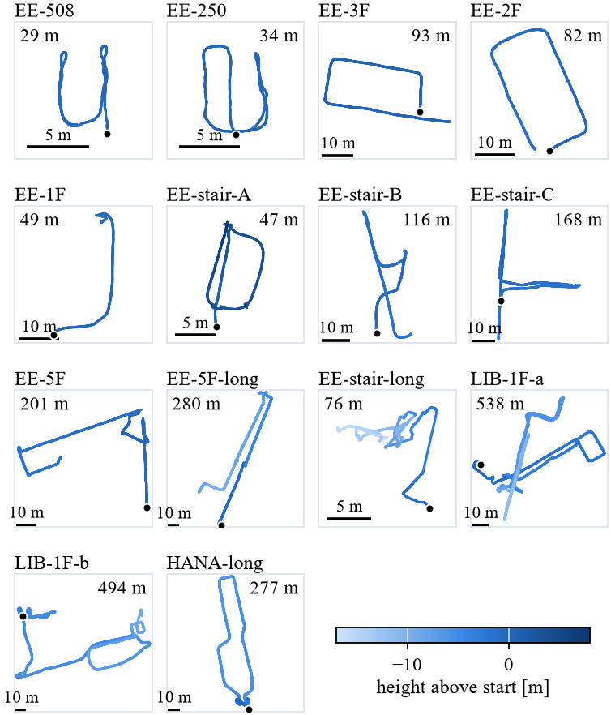
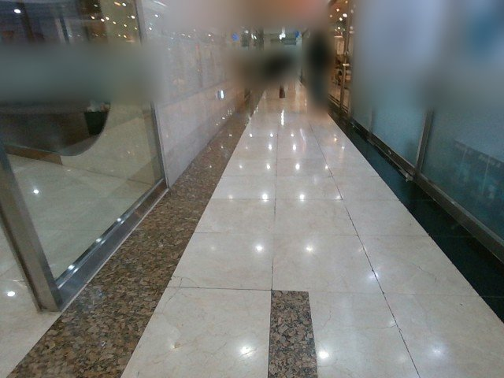
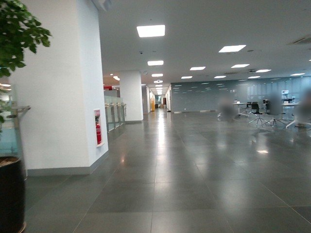
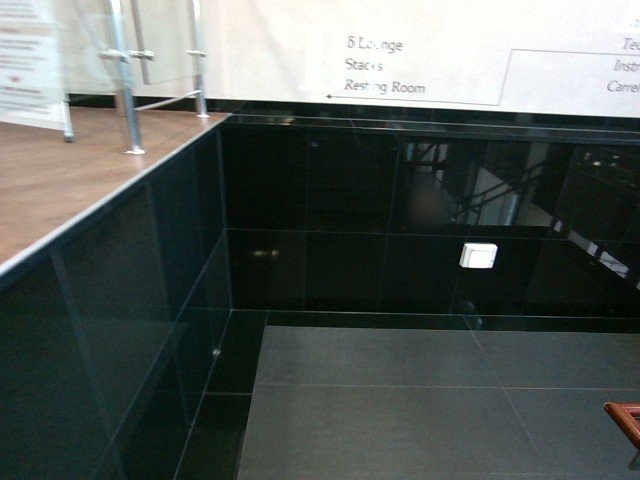
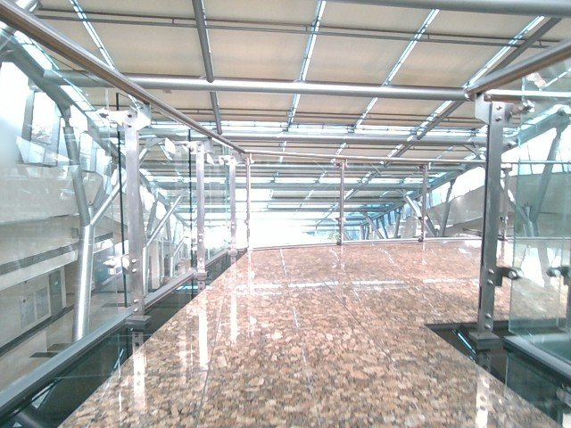
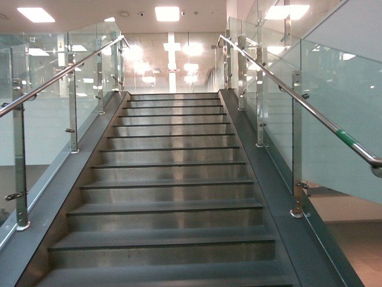
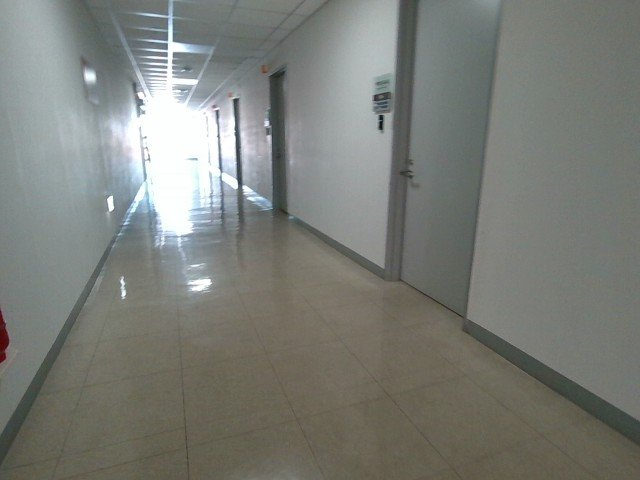
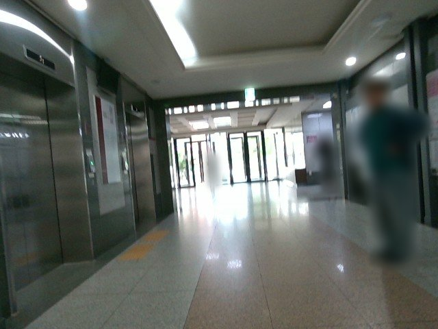

Sequences
Fourteen continuous hand-held routes through corridors, rooms, lobbies and stairwells of three campus buildings.
| Sequence | Building | Radar (s) | Raw frames | RGB-D frames | Path (m) | Route | Size (GB) |
|---|---|---|---|---|---|---|---|
| EE-508 | EE | 62.3 | 1,245 | 1,858 | 29.4 | Office room | 3.1 |
| EE-250 | EE | 74.3 | 1,486 | 2,188 | 34.2 | Room | 3.6 |
| EE-3F | EE | 52.0 | 1,040 | 3,760 | 93.2 | Corridor loop | 3.9 |
| EE-2F | EE | 100.9 | 2,018 | 2,959 | 82.0 | Corridor loop | 4.9 |
| EE-1F | EE | 60.6 | 1,211 | 1,798 | 48.8 | Lobby, glass, pedestrians | 3.0 |
| EE-stair-A | EE | 71.6 | 1,432 | 2,096 | 47.1 | Stairs and elevator lobby | 3.5 |
| EE-stair-B | EE | 124.7 | 2,494 | 3,666 | 116.5 | Lobby and corridors, out and back | 6.0 |
| EE-stair-C | EE | 178.8 | 3,575 | 5,224 | 168.0 | Lobby and corridors, out and back | 8.6 |
| EE-5F | EE | 225.2 | 4,504 | 6,573 | 200.6 | Floor traversal along a glass facade | 11 |
| EE-5F-long | EE | 295.7 | 5,914 | 8,723 | 279.6 | Extended traversal across floors | 15 |
| EE-stair-long | EE | 104.3 | 2,085 | 3,081 | 76.0 | Stairwell traversal | 5.1 |
| LIB-1F-a | Library | 539.5 | 10,789 | 15,876 | 538.0 | Library loop | 27 |
| LIB-1F-b | Library | 524.3 | 10,486 | 15,401 | 494.4 | Library to a glass-roofed corridor | 26 |
| HANA-long | HANA | 321.8 | 6,436 | 9,538 | 277.4 | Closed loop from a glass-roofed bridge | 16 |
| Total | 3 buildings | 2,736 | 54,715 | 82,741 | 2,485 | ≈ 133 |


Scenes
Pedestrians, glass facades and partitions, mirror-like stone, a glass-roofed bridge, stairwells and textureless corridors. The share of valid D455 depth pixels in the same frame is given under each image. People are blurred.










